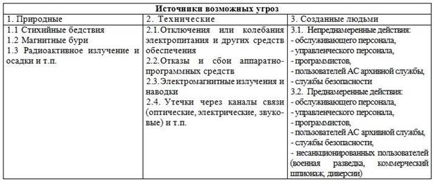

Событие (или действие), которое может вызвать нарушение функционирования АС, называется угрозой. Возможность нарушения нормальной работы АС зависит от наличия в ней уязвимых мест. Количество и специфика уязвимых мест зависит от вида решаемых задач, характера обрабатываемой информации, аппаратно-программных особенностей АС, наличия средств защиты и их характеристик.
Рассмотрим обобщенный перечень возможных угроз, характерный для любой АС. Условно возможные угрозы можно разделить на три группы в соответствии с основными источниками угроз (табл. 2).
Таблица 2. Классификация угроз АС

Угрозы первой группы независимы от людей. Угрозы подгруппы 1.1 связаны с прямым физическим воздействием на элементы АС (ураганы, наводнения, пожары и т. п.), вызывают нарушения работы АС и физическое уничтожение носителей информации, средств обработки и передачи данных, обслуживающего персонала. Угрозы подгруппы 1.2 связаны с электромагнитным воздействием на магнитные носители информации, электронные средства обработки и передачи данных, обслуживающий персонал и ведут к отказам и сбоям аппаратуры, искажению или уничтожению информации, ошибкам персонала.
Угрозы подгруппы 1.3 аналогичны по последствиям угрозам подгруппы 1.2 и, кроме того, ведут к заболеваниям персонала.
Угрозы второй группы связаны с надежностью технических средств систем обеспечения работы АС. Угрозы подгруппы 2.1 связаны с внезапным временным прекращением работы АС и приводят к потерям информации и управления объектами в управляющих АС. Угрозы подгруппы 2.2 связаны с надежностью работы аппаратнопрограммных средств и ведут к искажению и потерям информации, нарушениям в управлении объектами. Угрозы подгруппы 2.3 связаны с наличием электромагнитных излучений и наводок, посредством которых осуществляется несанкционированный перенос информации за пределы АС, что приводит к утечке информации. Угрозы подгруппы 2.4 связаны с утечкой информации через легальные каналы связи за счет имеющейся возможности снятия ее специальными датчиками или посредством прямого подключения.
Угрозы третьей группы зависят от присутствия людей, как в АС, так и вне ее. Угрозы подгруппы 3.1 связаны со случайными непреднамеренными действиями пользователей, ошибками операторов, программистов, управленческого персонала, сотрудников архивной службы и службы безопасности и ведут к искажению или уничтожению информации, нарушению выполнения АС своих функций, ошибкам в работе программ и средствах управления безопасностью АС. Угрозы подгруппы 3.2 связаны с преднамеренными действиями людей, направленными на нанесение ущерба АС, получение личных привилегий и доходов. Данная группа угроз является наиболее многочисленной. При этом возможны виды угроз:
– маскировка под законного пользователя;
– проникновение в систему управления безопасностью с целью изменения ее характеристик;
– организация отказа для пользователей в использовании ресурсов;
– передача информации неверному абоненту;
– злонамеренное разрушение ресурсов АС;
– ввод ложных данных;
– незаконное копирование или кража носителей информации, перехват чужих сообщений;
– порождение правдоподобных сообщений или модификация передаваемых сообщений;
– забастовки, саботаж;
– клевета, мистификация угроз, шантаж;
– искажение программ, внедрение вирусов и троянских коней;– установка разведывательной аппаратуры.
Рассмотрим специфику угроз по отношению к типам конкретных АС, определенным в таблице 1 (см. графу "Шифр АС").
В подклассе 111 вышеуказанные угрозы приводят к потере управления государством, нарушению баланса отраслей, к крупным экономическим потерям на уровне государства, экономическим преступлениям в особо крупных размерах, нанесению ущерба национальной безопасности, престижу государства.
В подклассе 112 реализация угроз наносит экономический ущерб, как на уровне государства, так и межгосударственных отношений. Экономические потери могут быть также значительными. Особенно опасна утечка информации посредством коммерческого шпионажа, разведки, утечки за счет излучений и средств связи.
В подклассе 113 реализация угроз ведет к срыву выполнения производственных программ предприятий, экономическим потерям.
Особенностью данного подкласса АС является использование информации поставщиков, субподрядчиков, потребителей и т. п. различной ведомственной принадлежности, что повышает сложность и значимость защиты в первую очередь от угроз, созданных людьми.
В подклассе 114 наиболее важна защита информации от искажения и обеспечение авторских прав учреждений. Реализация угроз ведет к экономическим потерям.
В подклассе 115 реализация угроз приводит не только к экономическим потерям, утечке и уничтожению информации, но и связана с безопасностью людей (диспетчерские системы и т. п.). Особое внимание следует уделять обеспечению достоверности информации.
В подклассе 116 реализация угроз может приводить к значительным экономическим потерям. Особое значение имеет защита авторского права. Отличительной особенностью данного подкласса является доступ пользователей к большим объемам информации и различным видам информационно-вычислительных сетей.
В подклассе 117 осуществляется обработка информации, связанной с обслуживанием населения, в том числе и медицинским.
Особое значение в данном подклассе АС имеет защита личной тайны.
В подклассе 121 реализация угроз ведет к экономическим потерям. Особое внимание следует уделять защите информации о заказах государственных и оборонных ведомств.
В подклассе 122 особое значение имеет реализация угроз со стороны конкурирующих частных организаций (бирж, банков, страховых организаций, рекламных агентств и т. п.). Возможны экономические потери на уровне частных предприятий, отдельных граждан.
В подклассах 123, 124 особенности реализации угроз аналогичны подклассам 113, 114.
В подклассе 125 реализация угроз ведет к экономическим потерям частных организаций и к угрозе безопасности людей. Особое внимание следует уделить безопасности передачи информации при обслуживании государственных и оборонных организаций.
В подклассе 126 особенности реализации угроз аналогичны подклассу 116.
В подклассе 127 особое внимание следует уделить защите личной информации.
В подклассе 211 реализация угроз впрямую связана с ущербом национальной безопасности государства, нарушением управления вооруженными силами, особое значение имеет временной фактор (средства раннего предупреждения, ПВО, управление стратегическими вооруженными силами, силами быстрого реагирования и т. п.).
Экономический ущерб может быть весьма значителен. Обработка информации связана с данными различной степени конфиденциальности.
В подклассе 212 реализация угроз приводит к экономическим потерям. Особое внимание необходимо уделять защите от коммерческого шпионажа со стороны конкурентов (торговля оружием, системами ПВО, военными технологиями и т. п.).
В подклассе 213 реализация угроз связана с национальной безопасностью, экономическими потерями, приоритетами и авторскими правами. Возможен чрезвычайно широкий спектр угроз. Особое внимание необходимо уделять защите информации в связи с использованием значительного числа субподрядчиков.
В подклассе 214 реализация угроз связана с возможностью разглашения в рамках учебного процесса, например тактикотехнических данных военной техники, стратегических и тактических планов и технологий и т. п. Особое внимание следует уделять защите от военной разведки, шпионажа. Возможны экономические потери, нанесение ущерба национальной безопасности.
В подклассах 215–217 особенности реализации угроз аналогичны соответственно подклассам 115–117. Кроме того, возможна утечка информации о дислокации войск и вооружений, что ведет к угрозе национальной безопасности.
В подклассе 221 особенности реализации угроз связаны с выполнением оборонных заказов. Возможны экономические потери, как на государственном, так и частном уровне, нанесение ущерба национальной безопасности, престижу фирмы.
В подклассах 222–227 особенности реализации угроз аналогичны подклассам 212–217 соответственно.
Анализ особенностей реализации угроз безопасности информации показывает невозможность разделения систем зашиты по ведомственному принципу, а необходимость использования компьютерных сетей, баз данных коллективного пользования только усугубляет проблему обеспечения безопасности информации.